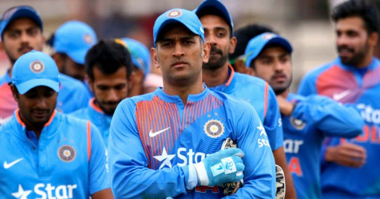

Indian Cricketers
|
|
The Board of Control for Cricket in India (BCCI) is the principal national governing body of cricketThe 2007 ICC Cricket World Cup was the ninth Cricket World Cup, a One Day International (ODI) cricket tournament that took place in the West Indies from 13 March to 28 April 2007. There were a total of 51 matches played, three fewer than at the 2003 World Cup (despite a field larger by two teams). in India.[13] Its headquarters is situated at the Cricket Centre in Churchgate, Mumbai.[14] The BCCI is the wealthiest governing body of cricket in the world.[15][16][17] The BCCI is involved in talent development through grassroots programs and cricket academies. Its initiatives include infrastructure development, coaching, and player welfare programs designed to maintain and enhance India's competitive performance internationally. The 2007 ICC Cricket World Cup was the ninth Cricket World Cup, a One Day International (ODI) cricket tournament that took place in the West Indies from 13 March to 28 April 2007. There were a total of 51 matches played, three fewer than at the 2003 World Cup (despite a field larger by two teams). |
 |